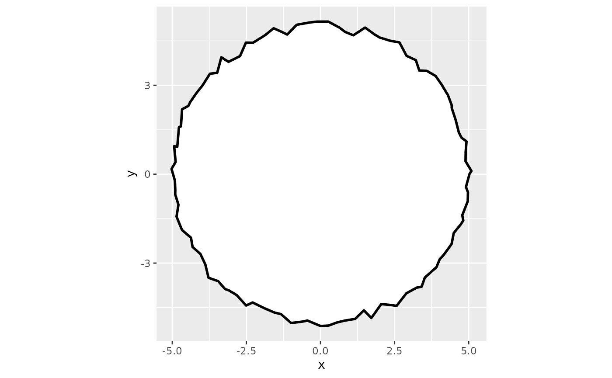
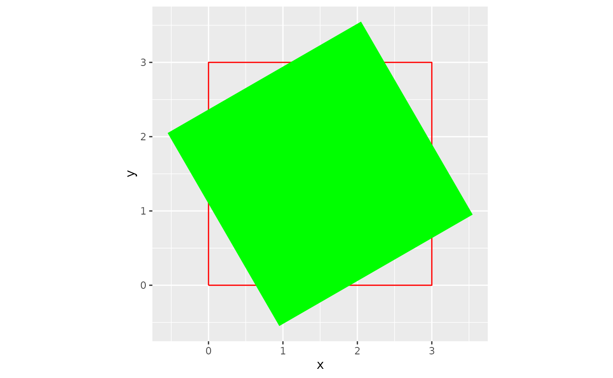
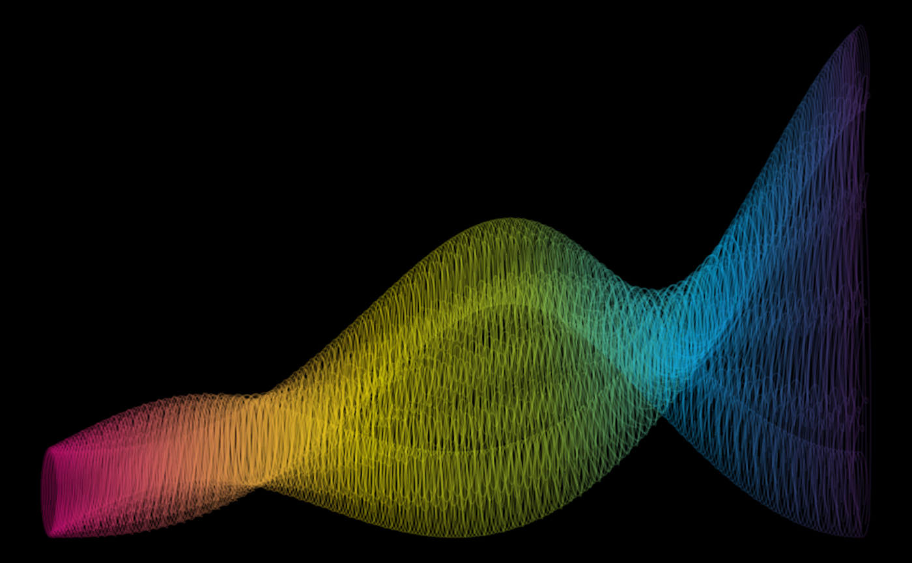

Brief Examples
artpack can be used to create specified dataframes that will map art
when fed into ggplot2 functions:
For example, circle_data() creates a data frame that
maps a circle on to a ggplot:
#| fig.alt: >
#| ggplot plot showing a black outlined circle with
#| irregular, slightly wavy edges centered at the origin
#| of a coordinate grid, with x and y axes ranging from
#| approximately -5 to 5, set against a light gray background,
#| the default ggplot2 plot theme.
# Load your libraries#
library(ggplot2)
library(artpack)
# Use the function to create a data frame#
df_circle <-
circle_data(
x = 0,
y = 0,
radius = 5,
color = "black",
fill = "white"
)
# Feed it into a ggplot#
df_circle |>
ggplot(aes(x = x, y = y)) +
geom_polygon(
fill = df_circle$fill,
color = df_circle$color,
linewidth = 1,
position = position_jitter(width = .1, height = .2)
) +
coord_equal()
rotator will mathematically “rotate” existing data
points in a data frame:
#| fig.alt: >
#| ggplot plot showing a bright green square rotated
#| approximately 120 degrees, positioned over a red
#| outlined square on a coordinate grid with x and y axes
#| labeled, set against a light gray background, the
#| default ggplot2 plot theme.
# Load in your libraries#
library(ggplot2)
library(artpack)
# Make a square yourself if you want#
original_square <-
data.frame(
x = c(0, 3, 3, 0, 0),
y = c(0, 0, 3, 3, 0)
)
# Rotate your data points by 120° and...
# ...anchor the rotation around the center of the square#
rotated_square <-
rotator(
data = original_square,
x = x,
y = y,
angle = 120,
anchor = "center"
)
# Plot the original and rotated squares to see the difference#
ggplot() +
geom_path(
data = original_square,
aes(x, y),
color = "red"
) +
geom_polygon(
data = rotated_square,
aes(x, y),
fill = "green"
) +
coord_equal()
artpack functions are designed to be used in any part of your workflow. Experiment for some cool results:
# Load in your libraries#
library(ggplot2)
library(purrr)
library(dplyr)
#>
#> Attaching package: 'dplyr'
#> The following objects are masked from 'package:stats':
#>
#> filter, lag
#> The following objects are masked from 'package:base':
#>
#> intersect, setdiff, setequal, union
library(tibble)
library(artpack)
# Create a base square with artpack if you want#
square <- square_data(x = 0, y = 0, size = .1, group_var = TRUE)
# Create square specs to be iterated on#
n_square <- 500
scaler <- seq(1, 100, length = n_square)
fills <- art_pals("imagination", n = n_square)
angles <- seq(0, 360, length = n_square)
group_n <- group_numbers(1:n_square)
# Add a random transformation for a little razzle dazzle ✨
theta <- seq(0, 30, length = 250)
# Create your list of specs to be iterated on#
list_opts <-
list(
scaler,
fills,
angles,
group_n
)
# Create the final data frame#
df <-
pmap(list_opts, ~ rotator(
square |>
mutate(
x = (x + ..1),
y = (y * ..1),
fill = ..2,
group = paste0(group, ..4)
),
x = x, y = y, angle = ..3
)
) |>
list_rbind() |>
mutate(
x = x + cos(theta),
y = y + sin(theta)
)
# Plot the final image#
df |>
ggplot(aes(x = x, y = y, group = group)) +
theme_void() +
theme(plot.background = element_rect(fill = "#000000")) +
geom_path(
color = df$fill,
alpha = .2
) 